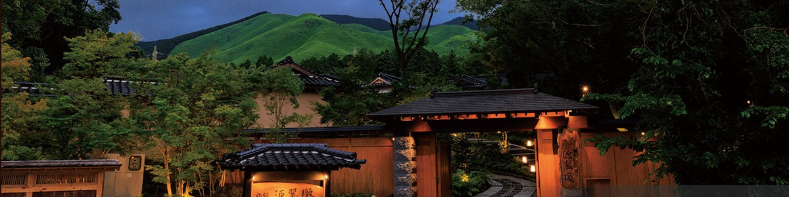

交通アクセスAccess交通
阿蘇までの道のりGetting to Aso抵达阿苏
『源翠瓏』への交通アクセス
Finding us in Aso
抵达源翠瓏
熊本県阿蘇郡西原村小森 2113-3
2113-3 Komori, Nishihara-mura, Aso-gun, Kumamoto 861-2402, Japan
日本国 熊本县 阿苏郡 西原村 小森 2113-3
お車でのアクセスBy Car自驾
| JR熊本駅Kumamoto Stn熊本站 | 約 1時間 15分approx. 1 h 15 min约 1 小时 15 分 |
| 九州道 益城熊本空港 I.CMashiki Kumamoto Airport IC九州道 益城熊本机场 IC | 約 25分approx. 25 min约 25 分钟 |
| 熊本 I.CKumamoto IC熊本 IC | 約 25分approx. 25 min约 25 分钟 |
| 熊本空港Kumamoto Airport (KMJ)熊本机场 | 約 15分approx. 15 min约 15 分钟 |
公共交通機関でBy Public Transport公共交通
| 電車Rail铁路 | JR博多駅 → JR熊本駅（鹿児島中央行き）49分／JR熊本駅 → JR新水前寺駅（肥後大津行き）8分 JR Hakata → JR Kumamoto (Kagoshima-Chuo line) 49 min · JR Kumamoto → JR Shin-Suizenji (Higo-Ozu line) 8 min JR 博多站 → JR 熊本站（鹿儿岛中央方向）49 分钟／JR 熊本站 → JR 新水前寺站（肥后大津方向）8 分钟 |
| バスBus巴士 | JR熊本駅 → 萌の里・俵山登山口（高森中央行き）1時間19分／味噌天神 → 萌の里 54分 JR Kumamoto → Moe-no-Sato/Tawarayama Trailhead (bound for Takamori-Chuo) 1 h 19 min · Miso-tenjin → Moe-no-Sato 54 min JR 熊本站 → 萌之里·俵山登山口（高森中央方向）1 小时 19 分／味噌天神 → 萌之里 54 分钟 |
| 熊本空港からFrom Airport机场 | 産交バス → 萌の里（高森中央行き）約 11分 Sankou Bus → Moe-no-Sato (Takamori-Chuo line) approx. 11 min 产交巴士 → 萌之里（高森中央方向）约 11 分钟 |
| 徒歩Walk步行 | 萌の里 バス停 より 徒歩 約 10分 From Moe-no-Sato bus stop, approx. 10 min on foot 由萌之里巴士站步行约 10 分钟 |
源翠瓏Gensuirou源翠瓏
〒861-2402 熊本県阿蘇郡西原村小森 2113-3
TEL: 096-279-1800（受付 10:00 - 18:00）
2113-3 Komori, Nishihara-mura, Aso-gun,
Kumamoto 861-2402, Japan
TEL: +81 (0)96-279-1800 (10:00 – 18:00 JST)
〒861-2402 日本国 熊本县 阿苏郡 西原村 小森 2113-3
TEL: +81 (0)96-279-1800（10:00 – 18:00 日本时间）